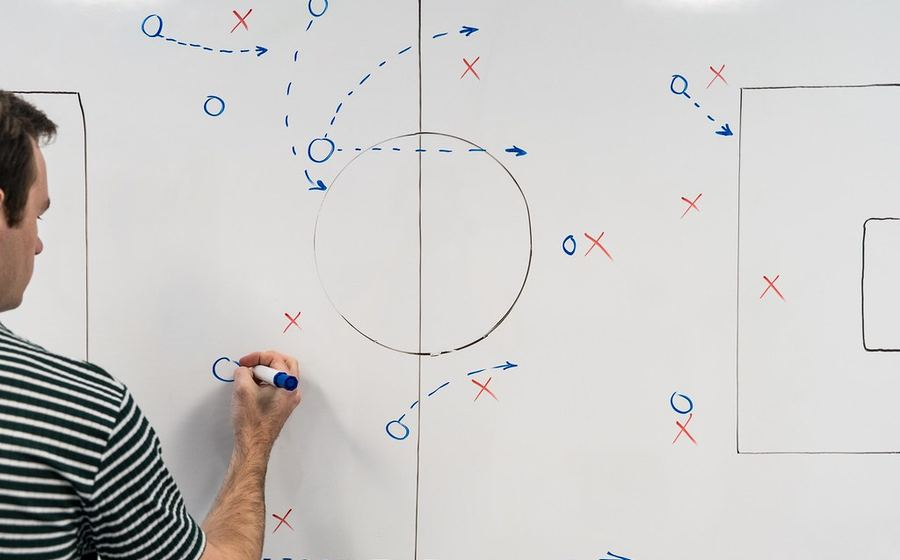
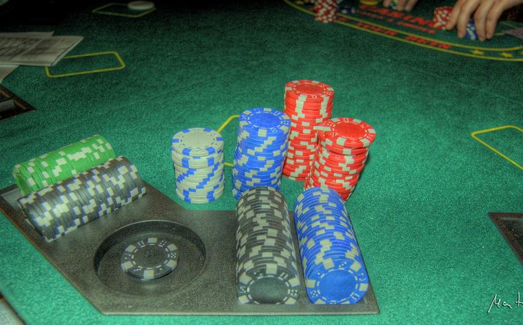

Analisis Taktik: Tren Formasi 3-4-3 di Liga 1 Musim Ini
Mengapa makin banyak pelatih Liga 1 beralih ke tiga bek sepanjang paruh musim ini, dan bagaimana dampaknya pada gaya permainan tim papan atas.
Mengenal Teknik Dasar Tinju: Panduan untuk Pemula
Dasar-dasar footwork, guard, dan kombinasi pukulan yang wajib dikuasai sebelum naik ke level kompetitif.

Perbedaan Aturan 8-Ball dan 9-Ball yang Sering Membingungkan Pemula
Penjelasan lengkap perbedaan aturan main, urutan bola, dan cara menang di dua format biliar paling populer ini.

Mengenal Dasar Strategi Poker Kompetitif ala Turnamen Profesional
Konsep posisi, membaca lawan, dan manajemen chip yang dipakai pemain turnamen profesional kelas dunia.
Sejarah Singkat Turnamen Poker Dunia dan Perkembangan Format Kompetisinya
Bagaimana turnamen poker kompetitif berkembang dari era awal hingga format modern saat ini.
Ingin membaca lebih banyak? Kunjungi halaman kategori utama kami: Sepak Bola, Tinju, Biliar, dan Poker. Anda juga dapat melihat seluruh struktur situs kami di halaman Peta Situs.